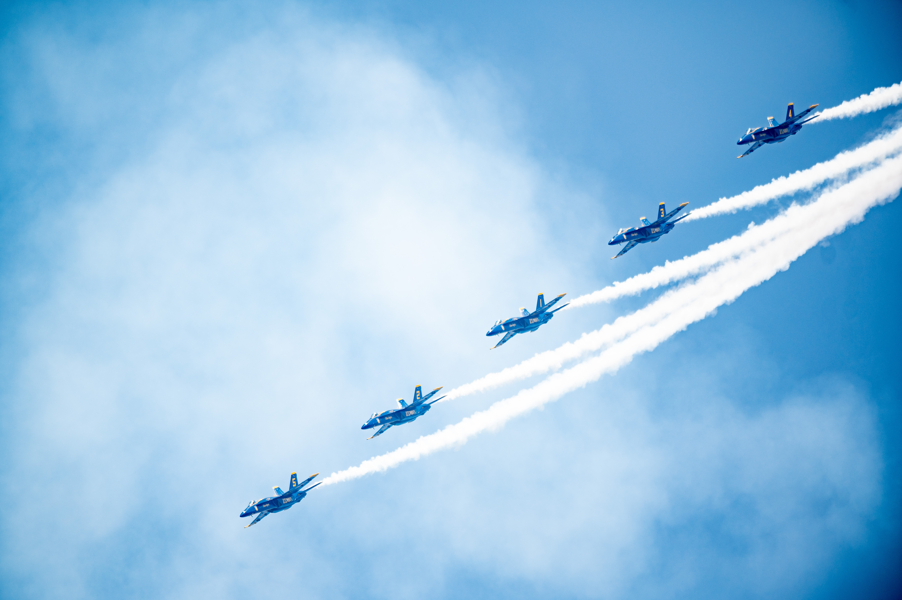

한순간의 실수도 용납되지 않는 하늘 위, 가장 압도적인 비행이 시작된다! 탑건 매버릭 볼려고 탑건 1도 봤는데 보러 갈 시간이 없다!
《탑건: 매버릭》(영어: Top Gun: Maverick)은 조지프 코신스키가 감독하고 에런 크루거, 에릭 워렌 싱어, 크리스토퍼 매쿼리가 각본을 쓴 2022년 미국의 액션 드라마 영화이다. 《탑건》 (1986년)의 속편은 마일스 텔러, 제니퍼 코넬리, 존 햄, 글렌 파월, 루이스 풀먼, 에드 해리스, 그리고 발 킬머와 함께, 톰 크루즈가 원작에서 그의 역할을 다시 맡는 피트 "매버릭" 미첼 역으로 출연한다. 전작의 36년 후를 배경으로 한 이 영화는 매버릭이 마지못해 미국 해군 타격 전투기 전술 강사 프로그램에 복귀한 후, 그는 젊은 비행사들을 훈련시키면서 그의 과거와 마주해야 하는데, 그 중에는 매버릭의 죽은 가장 친한 친구의 아들이 포함되어 있다.